I’ve been making games for almost two decades now. I have experience in varying subjects, with a focus on Gameplay Programming in C++.
I have a formal education in International Game Development at the Breda University, graduated cum laude, then moved on to work for Ubisoft Massive for 6 years as a gameplay, character, camera and controls programmer.
I love working on a vast variety of features, as I get to work together with creative teams of awesome people. Over the years, I’ve picked up knowledge on quite a few topics.
I'm also a coding enthusiast: I've co-created the Coding Guild at Massive Entertainment and I used to be part of the C++ expert group in college. Here are some of my preferred tools:
Below are a some of the project releases that I have been a part of on over the last few years. I pick up new tools quickly, which makes understanding new or different things a hobby to me.
I've also have worked on projects in large codebases and custom engines, I am best at working in Unreal Engine, Snowdrop Engine or Godot for developing games, but I've done some work with Unity as well.
Tap or click on any of the cards to see my role and more details!
The Division 2
Coop Looter Shooter
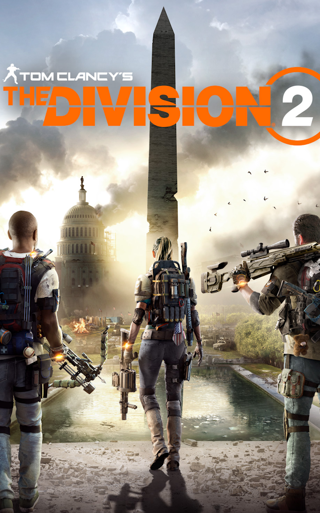
The Division 2: Warlords of New York DLC
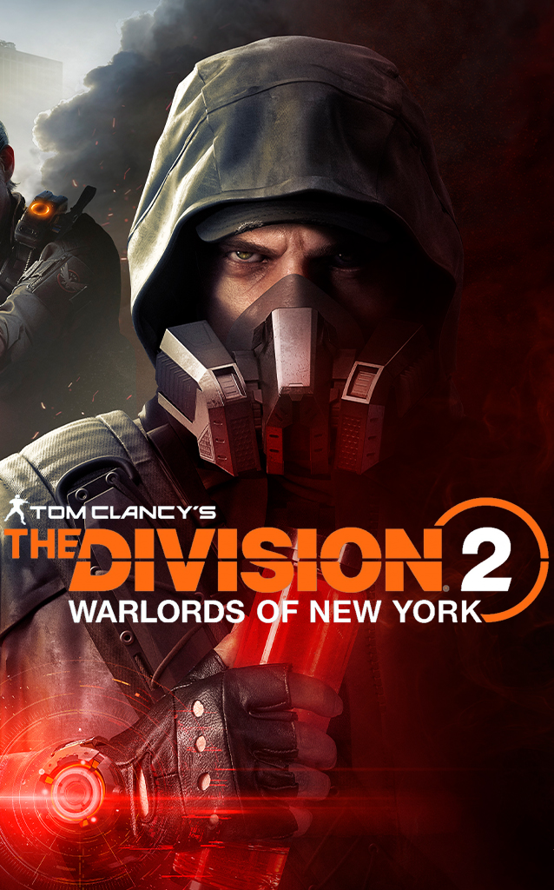
Avatar: Frontiers of Pandora Release + DLC
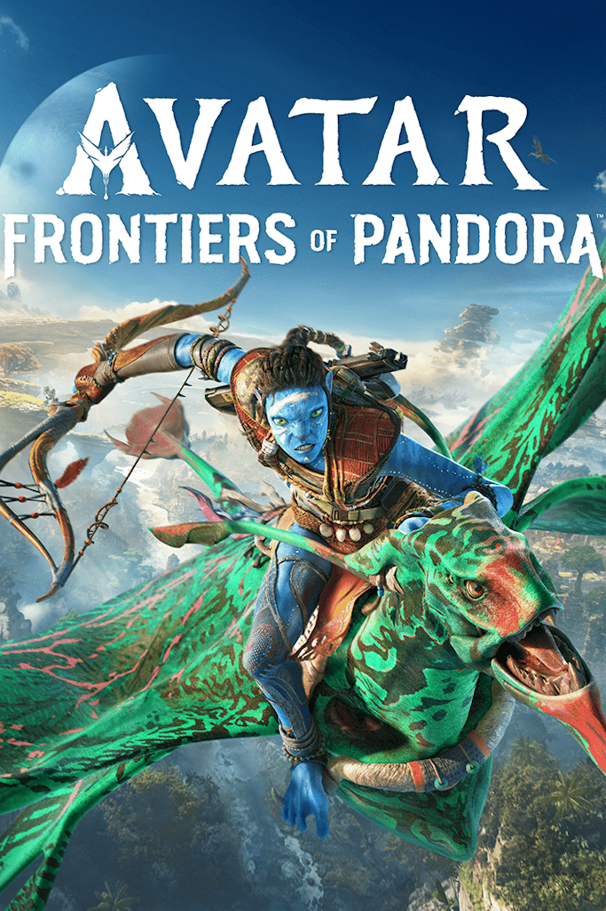
Unannounced IP
Early development
Shattered Lights UE4 VR Horror
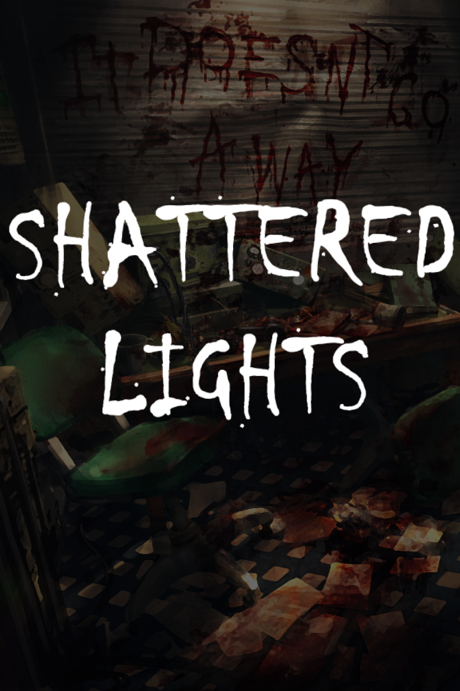
Bioside UE4 VR Shooter
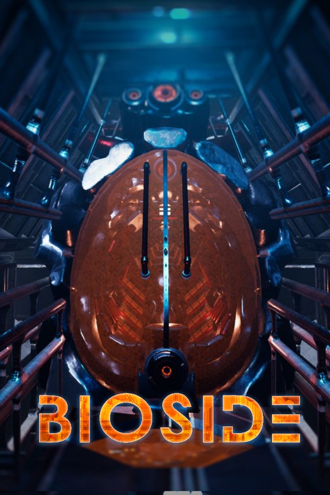
BaBooms UE4 Multiplayer
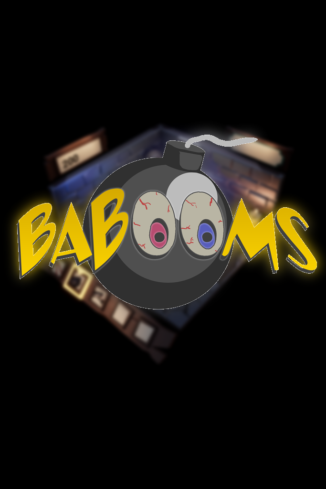
TiFrame C++ Game Framework
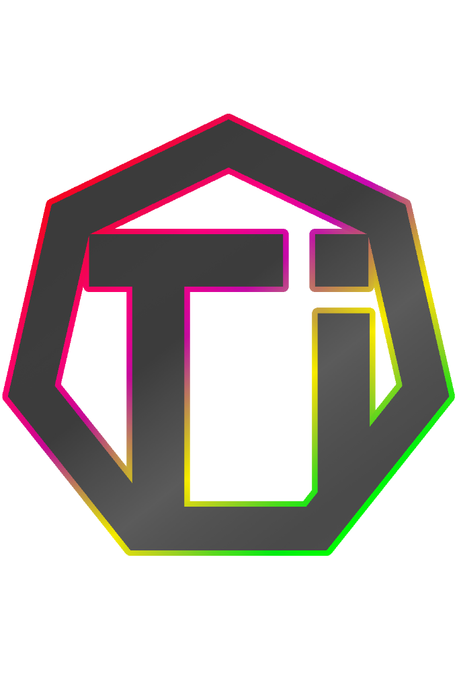
... For code snippets and an overview of projects outside of my work and education, here is the link to My GitHub.
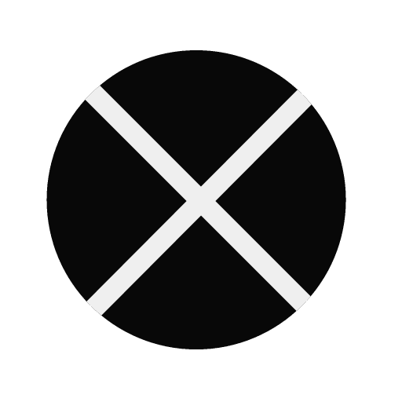
The Division 2
I worked on The Division 2 as a C++ Gameplay Programmer Intern during the post-launch phase from 2019 onwards. I focused on core gameplay systems, with responsibilities
covering mostly networking and data replication to ensure reliable multiplayer behavior: This included fixes and improvements to the movement system,
enhancing responsiveness and stability, and I worked on shooting mechanics to refine gameplay feel and functionality in a live product environment.
Early on, this includes things like making sure the tires on cars wouldn't all explode if you shot a single bullet into the door of the car, or figuring out why a
single bullet would not register to hit a target when firing at the targets in the target range. Feel free to ask me about that, turned out to be a fun bug!
Later on, I was investigating players getting stuck climbing ladders, hitbox mismatches on moving players, jitter and network latency related problems, navmesh islands
showing up in different places for the server and clients.
At a glance:
Role: C++ Gameplay Programmer Internship
(2019, Post-Launch)
Technical Expertise/Responsibilities:
• Networking and Data Replication
• Movement system Fixes and Improvements
• Shooting Mechanics
I worked as a C++ 3C Programmer Intern for the launch for the first large Division 2 DLC in 2020. I owned the Status Effect feature at the code level, taking responsibility for
its implementation and maintenance. I contributed to gameplay ability implementations, such as player skills (the Seeker Mines, Decoy, Hive and other new tech skills), while
refactoring existing systems to improve reliability and maintainability, mostly dealing with problems people also had live on the main game.
Continued and expanded upon responsibilities from previous development phases to support a successful launch.
Information at a glance:
Role: C++, 3C Programmer Internship, Launch Support
Year: 2020 (DLC)
Code System Ownership:
• Status Effect Feature (Code Ownership)
Areas of Expertise / Responsibilities:
• Gameplay Ability implementations (Skills)
• Refactoring existing implementations
• Continuing previous responsibilities
I continued at Massive as a C++ Gameplay Programmer on Avatar: Frontiers of Pandora from 2021 to 2024, supporting development across launch, post-launch updates,
and DLC releases.
Over the several years, I had ownership of several core player systems, including player skills, status effects, character loading, visual customization, and
character creation. These features were central to the player experience, and I was responsible for implementing, maintaining, and improving them throughout
live development.
My work focused on creating new character related systems, and making everything more efficient and reliable. This included improving character performance, supporting
threaded loading of gear and equipment, and handling the saving and loading of gameplay data and player profiles. I also worked on networking and data replication to ensure systems
behaved correctly in multiplayer. In addition, I contributed to customization-related features and collaborated closely with designers, artists, and other engineers to deliver
stable, player-facing systems over multiple releases.
Code System Ownership:
• Player Skills
• Status Effects
• Character Loading
• Mount and Gear Systems
• Visual Customization
• Character Creation
Areas of Expertise/Responsibilities:
• Character Optimization
• Threaded Loading
• Serialization of Gameplay Data
• Networking & Data Replication
• Saving and Loading Profiles
We worked in a team of 19 people to create a VR shooter with innovative movement mechanics.
My contributions: - 3 guns and 3 grenades.
- Holstering system for weaponry.
- Implementing onepagers for prototypes.
- Communication point for the 7 programmers in the team.
This game doesn't have gravity. That means you're pulling yourself around the level while shooting rocket launchers, machine guns, revolvers and more at hostile drones. Creating these
weapons was amazing, working with gameplay designers to get everything to feel just right. The story of the game is that you're boarding a ship where the AI has gone rogue, and you're there
to shut it down forcefully. Getting the movement under control is tricky at first, but when you get used to it you are flying around the ship shooting things left and right.
Some more details on my work on this project. I was primarily developing gameplay for this project. I developed a gameplay event trigger system, so that our designers could easily implement
things like enemy spawning, or moving onto the next part of the tutorial. Besides that, I was focused on implementing weaponry, as specified before. I worked closely together with two designers to really get the weapons to feel correct and behave in a suitable way for our game.
I created three different grenades. The first was a grenade that either pushed or pulled all physics objects, including enemies. The second grenade is a threat detector, that shows all enemies within a certain radius through walls, for easy targeting and executing. The third grenade is more conventional: an explosive knife that sticks in your enemies, and then explodes, killing your targets.
Besides the grenades, I also implemented several guns. The first was an assault rifle/shotgun hybrid called "The Metalstorm" that you could use with either one or two hands, with a functional red dot sight for VR, and magazines that you can physically pull out to reload it. The firing speed was graph based, the less bullets you have, the slower it fires. It also had a secondary fire, which shot all of your bullets in a shotgun spread, but you needed to hold the gun with both hands to use it. I also created a Rocket Launcher that had manual guidance capabilities, and a lock-on system for tracking rockets. Besides that, I also worked on the revolver, giving it a flick forward to open it up so you could reload it. In the end, even though it looked really cool, we decided to remove the reloading systems from the game to give a smoother experience. Tossing your guns away was more fun in VR than trying to reload them.
The holstering system was probably one of the biggest challenges I faced on this project, tech wise. Having the holsters follow the players head movement felt very unnatural, but fully simulating a body in zero gravity was impossible, scope wise. In the end I extrapolated a position near the hips and near the shoulders of the player based on their hand location and the head rotation, but it could still be improved more. It was also implemented in a rush, as we came up with it less than two weeks before release. It worked out in the end, and ended up making the game more fun.
I also implemented the onboarding robot and all of its voicelines and all the triggers to activate those voicelines two days before release.
What makes this horror game special is that it is in full room scale, which means no player locomotion whatsoever, no teleporting or weird swinging around with your arms. We make the level
traversable by using Non-Euclidean spaces, similar to the game Antichamber, allowing the player to move an indefinite distance in the same 3x3 meters space.
Duration: 32 weeks. Team: ~18 people. Role: Lead Programmer/Game Programmer. When: September 2018 - (expected) June 2019
I created the player interaction systems, inverse kinematics and other hand logic.
Contributions: - Inverse kinematics for the fingers.
- All other hand and grabbing logic.
- Interaction system that supports all physics objects.
- Created the VR main menu.
- QA reports and maintaining the bug database.
- Physics collision handling on movable skeletal meshes.
For this project, we were taught how to properly research and explore a genre, which was VR horror for us. We researched the target audiences, horror classics and much more for the first
8 weeks of development. We then created a proper vertical and horizontal slice in the 8 weeks after that, to deliver a short but terrifying experience. That is the state of our project now.
Our team is confident that we can make a successful game out of this project.
We've turned this into one of the top projects of our year, even getting showcased on the Vive port twitter before it was even released, as well as being showcased on the top free games list on Steam.
BaBooms: Unreal Engine 4 Multiplayer Game.
Technical challenges
- Creating a multiplayer game as the only networking programmer
- Time period was only 6 weeks
- Very small team, high pressure environment.
I created the base for the project and did all the networking logic, and part of the gameplay logic.
For this project, I started out as the only programmer. I was in charge of making the gameplay, and to get it to work on a local network. Later on, more programmers joined the team,
although my role stayed the same.
Duration: 6 weeks. Team: 13 people. Role: Network programmer. When: May and June 2017
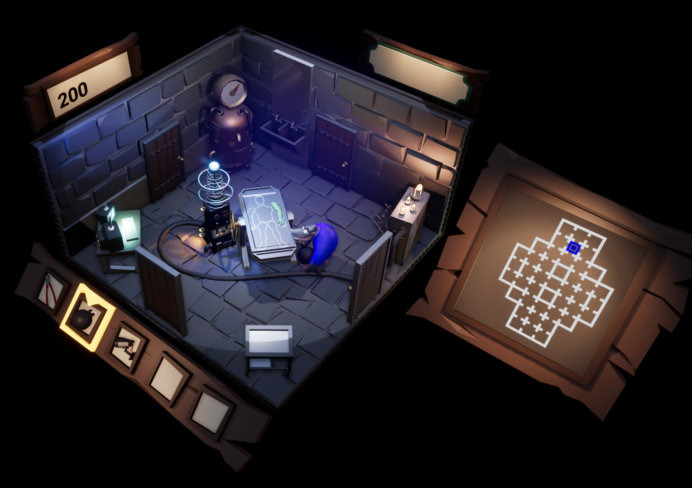
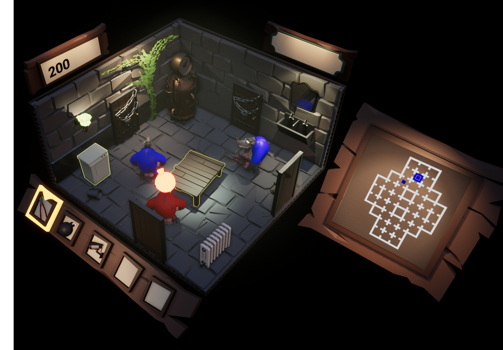
This is a 4 player team based game that's all about sabotaging your opponents while trying to find specific monster parts. The players control hopping baboons who
are trying to build a monster out of limbs. The parts are scattered around the map and the goal is to collect all parts and bring them back to your own lab, to bring the monster to life.
The first team to get all the parts wins the game. You're able to place traps and utilities around the level to delay or your opponents or gather information.
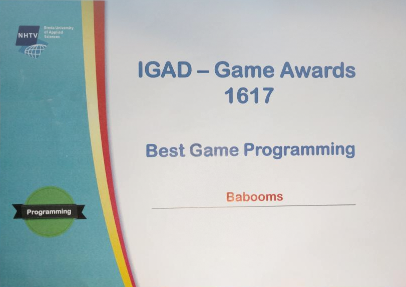
Some more details on my work during this project. This was a first year project, so we were still new to UE4, and we decided we wanted to create a multiplayer game. We had 6 weeks to develop this game, so it's fair to say that we overscoped slightly. I was the only programmer during the first two weeks, which meant that I had to not only create a working multiplayer demo using UE4's replication system, but also implement the initial gameplay features such as player movement, object interaction and room traversing.
Our project passed the first project culling, giving us two more weeks to flesh out the gameplay to something that looks remotely enjoyable. I got an extra programmer in the team, who had no networking experience, so the networking part was still my responsiblity. After those two weeks, we had a semi-playable game with two teams consisting of two players per team. There wasn't much gameplay yet, except for pressing F on objects to search them and placing traps on those objects using E, but the core game loop was implmented (connecting, finding the parts, winning, and disconnecting).
Our project then passed the second culling round, giving us a total of 13 people, including 4 programmers, who had to work with the hastily assembled networking system that I, as a first time networking developer, wrote in the first four weeks. Of course, code quality was not up to standard, and it was incredibly bugged out. We managed to pull the systems together so it was at least playable, and we ended up getting the "Best Game Programming" award for Babooms that year!
Although this was just a school project, I learned the basics of networking from these 6 weeks of development.
TiFrame: Personal C++ framework.
I like this project, as it shows that I like to make creative things outside of college and work.
I made it when I was 19, during my first college summer vacation. You can find the source code on GitHub:
https://github.com/Tdead1/TiFrame
Technical challenges
- Creating a renderer
- Custom mesh loader
- UI implementation
- Entity Component System
Project details
What initially started as a personal project to learn more about rendering later developed into a basic C++ framework that supports rendering, resource loading and management,
uses a entity component system to manage objects. I'm using ImGUI to help me create the UI. This is a personal project, and I have written all the code for it by myself.
This section is a lot shorter, since I can't show anything from this project, but during it's development I've worked
with several topics of interest. Some or all of these systems may not be in any form of the project, but during development
I've gotten to do a lot of cool exploration into different niches that I hadn't been exploring so much within Snowdrop. Of
special interest is that I was the only coder working on the character, camera and controls, since I have been on the project
at a very early stage.
At a glance:
Main Responsibilities: C++, Character, Camera and Controls.
Code Systems:
● Character Movement
● Vehicles
● Equipment & Weapons
● Player Animation code
● Status Effects
● Building system
Technical Expertise:
● Technical system architecture
● Multithreading
● Networking and Replication
● Prototyping and Brainstorming
Skills & Education
Bachelor (cum laude): Creative Media and Game Technologies (2016-2020)
Breda University of Applied Sciences International Game Architecture and Design (Website)
I speak 4 languages: Dutch natively, I'm highly proficient at English (C2),
and I know basic German and Swedish. The rest of my skillset can be found below (order of experience).